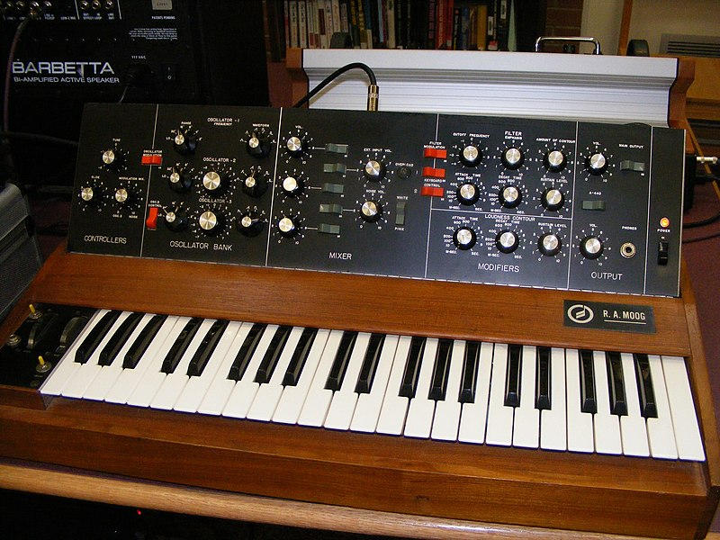

wikipedia
Synthesizers

A synthesizer is an electronic musical instrument that generates audio signals.
Synthesizers typically create sounds by generating waveforms through methods including
subtractive synthesis, additive synthesis and frequency modulation synthesis. These sounds
may be altered by components such as filters, which cut or boost frequencies; envelopes,
which control articulation, or how notes begin and end; and low-frequency oscillators,
which modulate parameters such as pitch, volume, or filter characteristics affecting timbre.
Synthesizers are typically played with keyboards or controlled by sequencers, software or
other instruments, and may be synchronized to other equipment via
MIDI.